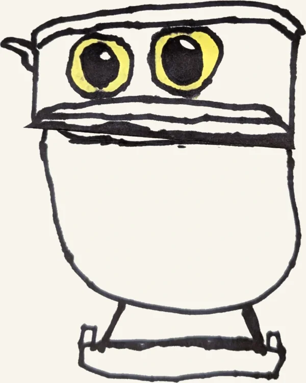

Murphy loves the folding surprises the Art for Kids Hub crew does. Closed, the paper is one picture. Unfold it and there's a surprise inside. These are his drawings, animated from photos of the paper, and every line is his marker.
